MAR DEL PLATA 4 X 4
Mar del plata 4 x 4 es una propuesta pensada para poder conocer los encantos de mar del plata desde 4 perspectivas.
Dentro de cada una te ofrecemos 4 actividades diferentes.
CULTURA
La ciudad de Mar del Plata ofrece diversas propuestas en sus principales museos y centros culturales para que toda la familia pueda disfrutar de la arquitectura neocolonial del archivo historico
MUSEO MAR
El Museo de Arte Contemporáneo de la provincia de Buenos Aires, que se erige frente a las costas del Atlántico con sus más de 7000 metros cuadrados. El proyecto estuvo a cargo del estudio de arquitectura Monoblock, que ganó el concurso establecido oportunamente. Ubicado en la avenida Camet y López de Gomara, ocupa un predio de dos hectáreas que incluye una plaza y patio de esculturas, con salas de exhibición cubiertas y al aire libre. La muestra con la que abrió sus puertas se denominó "Espíritu Pop" y recorrió los trabajos de artistas argentinos que fueron referentes en la década del 60. Cabe resaltar que en su primer mes el MAR fue visitado por 260.000 personas, que pudieron ver el Lobo de Mar de Marta Minujín, realizado con 80.000 envoltorios de Alfajores, que luego serían reemplazados por piezas de aluminio previo happening por medio del cual los visitantes pudieron cambiar los envoltorios por alfajores en comercio marplatenses. El museo cuenta también con un café y un espacio dedicado a los más pequeños, como también una tienda de recuerdos.
Doble click en la foto para ir a su ubicacion

MUSEO SCAGLIA
La historia natural del sudeste de la provincia de Buenos Aires está explicada, de manera pedagógica y dinámica, en el Museo Municipal de Ciencias Naturales “Lorenzo Scaglia”, con diversas salas a través de la cuales se cuenta la historia y se expone el material correspondiente. En la planta baja se dispone el acuario, con la especie estrella: los hipocampos, que con toda su historia mitológica, integran una de las dos comunidades existentes en el país. Una está ubicada frente a las costas marplatenses y la restante en la Patagonia. Allí, además, también se exponen especies de agua dulce, como anguilas o besugos. También en la planta baja, pero en el centro del edificio, se expone el esqueleto de una dinosaurio que es elegido por casi todos los chicos para tomarse una foto de recuerdo.. En el primero y segundo piso se suceden las áreas de paleontología, geología, ornitilogía, de especies autóctonas del sudeste bonaerense. También, con explicaciones gráficas, se cuentan las secuencias de la transformación de las capas geológicas y se ejemplica, específicamente con lo sucedido en Mar del Plata, con la loma de Santa Cecilia (y el actual paseo Dávila).
Doble click en la foto para ir a su ubicacion
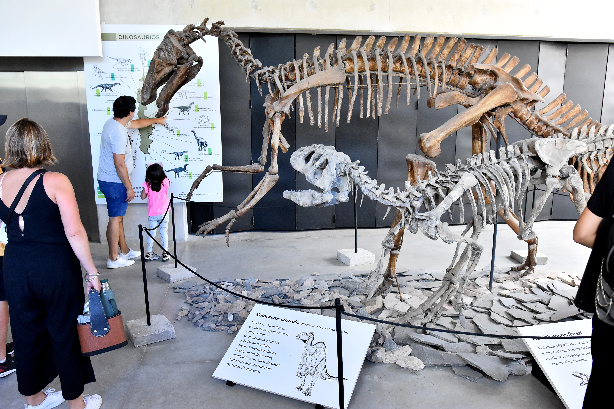MUSEO CARLOS CASTAGNIÑO
Es un emblema de las artes plásticas en la ciudad balnearia, el museo municipal de arte Juan Castagnino concentra obras de artistas argentinos de gran trayectoria. A mediados del año 1980, la antigua casa de verano de la tradicional familia Ortíz Basualdo se convirtió en la sede del Museo Municipal de Arte Juan Carlos Castagnino. La magnífica villa que actualmente es patrimonio histórico de la ciudad de Mar del Plata se sitúa en la loma Stella Maris y rodea el edificio diseñado por los arquitectos Louis Dubois y Paul Paters. El edificio fue construido por los Basualdo en 1909 y se remodeló en 1919, conservando su clásico estilo de principios de siglo XX. Las reminiscencias de los castillos franceses de Loira se refleja en cada una de las salas, decoradas por el diseñador belga Gustave Serruier-Bovy, que le imprimió el sello de art nouveau. Los muebles originales de Bélgica, la escalera de roble y hierro forjado con flores y líneas geométricas, las lámparas, los vitrales, los detalles del mobiliario y las demás piezas de art nouveau, son consideradas por especialistas internacionales como una de las mejores colecciones del mundo de esa corriente.
Doble click en la foto para ir a su ubicacion
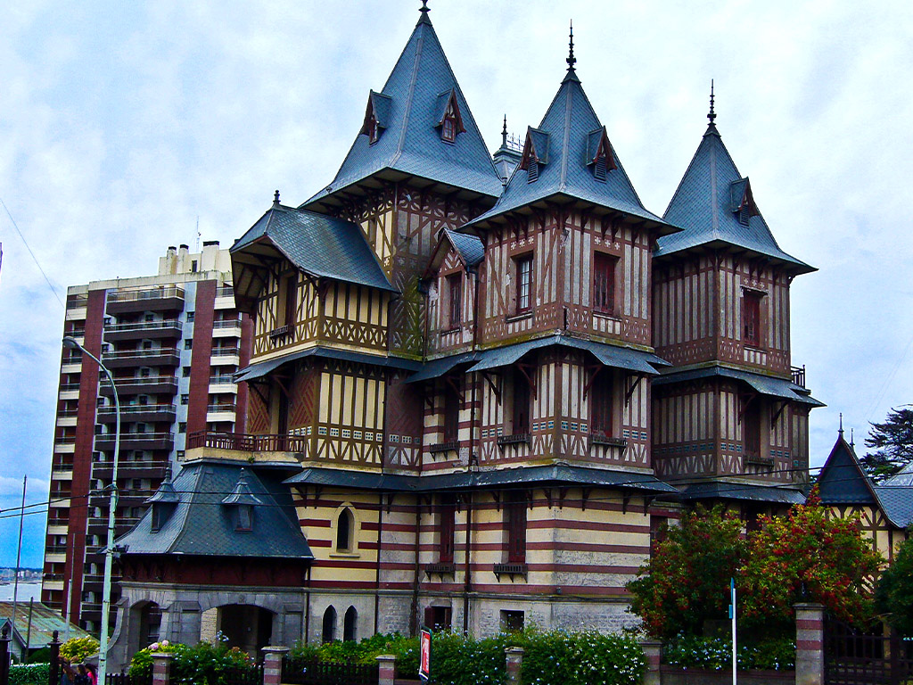CASA SOBRE EL ARROYO
la Casa del Puente. En definitiva, una de las obras arquitectónicas más reconocidas del siglo XX a nivel mundial. Es una creación de los arquitectos Amancio Williams y Delfina Gálvez Bunge por encargo del músico y compositor Alberto Williams, quien entre múltiples logros, intervino en la sinfonización del Himno Nacional Argentino. Representa una de las creaciones más representativas del movimiento moderno: es una vivienda construida con un propósito de ser un estudio musical que también cuenta con garage y pabellón de servicio. “Estructuralmente esta obra, de valores también escultóricos, sintetiza formas geométricas casi abstractas. Materializada principalmente en hormigón armado, se comporta como un conjunto espacial tridimensional. Su interior, de tipología lineal, presenta ambientes desarrollados en torno a las escaleras que dividen los espacios públicos de los privados y de servicio, haciendo referencia a la típica ‘casa chorizo’, vivienda tradicional de nuestro país”, reza su definición oficial. Está emplazada en medio de un pulmón verde y encima del arroyo Las Chacras, un curso de agua fundacional de la ciudad. El terreno está dividido en dos y la casa conecta ambos márgenes. “Pero no es una casa -dijo Graciela Di Iorio, arquitecta apasionada y presidenta de la Asociación Amigos Casa sobre el Arroyo-, es un conjunto integral compuesto por un parque de dos hectáreas que es una reserva ambiental en el marco de una reserva forestal, un pabellón de servicio que es otra construcción fantástica creada por los diseñadores más la casa en sí que está implantada por el cauce de un arroyo fundacional de Mar del Plata”. La experta dice que es una de las diez casas más importantes del siglo XX a nivel global. Fue declarada de Interés Patrimonial por el municipio de General Pueyrredon, monumento histórico y patrimonio cultural bonaerense y monumento histórico nacional. Luego de décadas de abandono, el municipio, la provincia y el gobierno la devolvieron a su estado original con una inversión millonaria. En los próximos días, volverá a abrir sus puertas en forma de museo.
Doble click en la foto para ir a su ubicacion
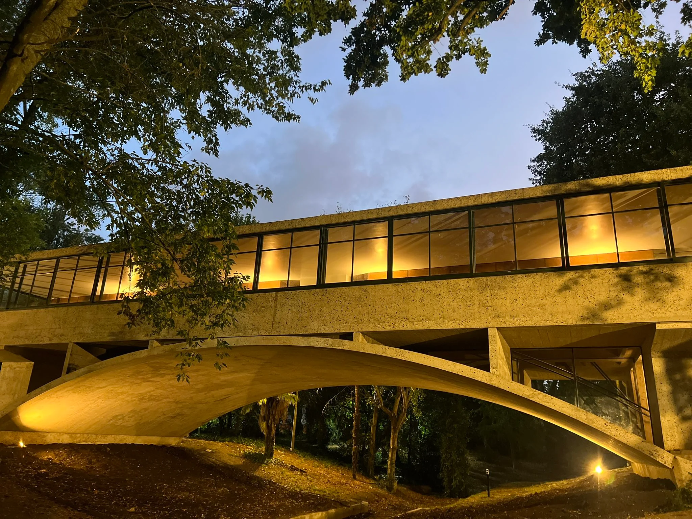FAMILIA
En Mar del Plata hay propuestas recreativas durante todo el año y para todos los gustos y edades.
ANAMORA
Mar del Plata encierra muchos secretos que pueden ser descubiertos cuando esta ciudad se muestra más intimista y personal, como en el invierno. Y en verano la reina de los balnearios argentinos muestra todo su esplendor. A bordo del Crucero Anamora se presenta una oportunidad única de hallar aquellos secretos y de apreciar su belleza inigualable en un punto de vista diferente. Esta embarcación con capacidad para 300 pasajeros ofrece un lugar donde el relax y la diversión se encuentran presentes en cada navegación de 1 hora y diez minutos, sucediéndose a cada instante momentos inolvidables.
Doble click en la foto para ir a su ubicacion
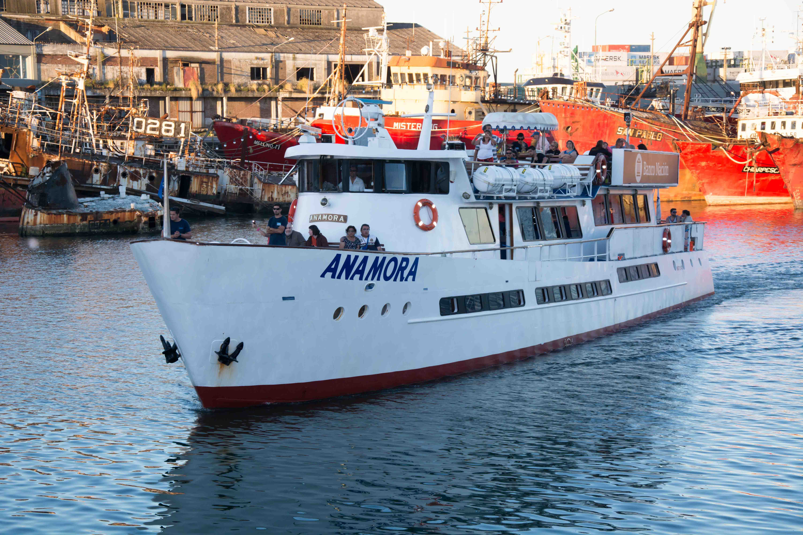AQUARIUM
Con más de 9 hectáreas de superficie, este parque ha llegado a recibir más de 200,000 visitantes por año y se caracteriza por su entorno natural frente al mar. Posee una espléndida diversidad de fauna que incluye varias especies de pingüinos, delfines, lobos marinos, tiburones, peces, chuchos, lémures y gran variedad de aves locales y exóticas en un hermoso aviario, así como la oportunidad de interactuar con algunos de estos animales y disfrutar de diferentes exhibiciones educativas, charlas didácticas y centros de consumo con vistas panorámicas al mar, que hacen de la visita a Aquarium una experiencia inolvidable. Con más de 24 años de experiencia en el mundo de los mamíferos marinos y de entretenimiento con presencia ahora en 10 países y 2 continentes, Grupo Dolphin recibió en 2018 más de 2 millones de visitantes, la mitad de los cuales vivieron la experiencia de interactuar con mamíferos marinos en alguno de sus 24 hábitats. La gran familia Dolphin la integran actualmente más de 260 delfines, 45 lobos marinos y 18 manatíes, entre otras especies, así como diversas especies de pingüinos, peces y aves exóticas.
Doble click en la foto para ir a su ubicacion
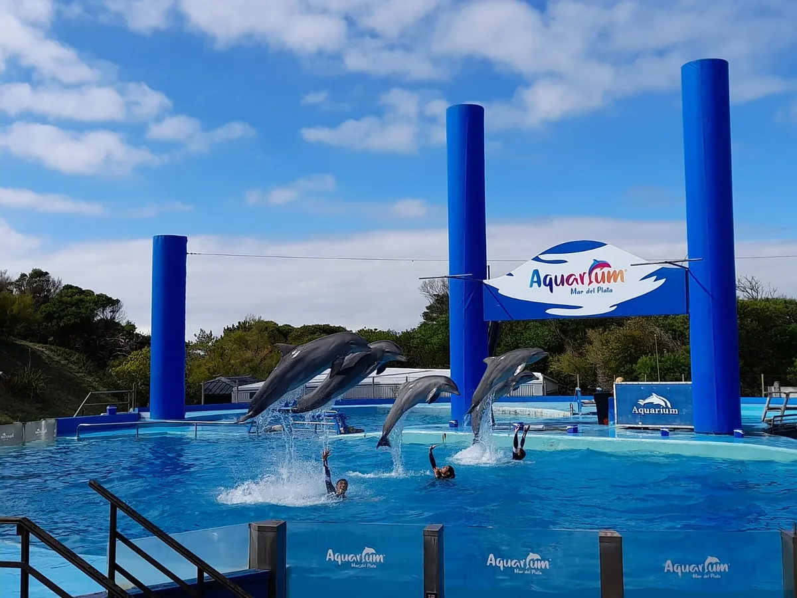MR FLY
MR.FLY se enorgullece de ser la primera instalación recreativa y de ocio para la diversión y ejercicio de la ciudad de Mar del Plata. Somos el lugar donde podés experimentar la diversión literalmente.
Doble click en la foto para ir a su ubicacion
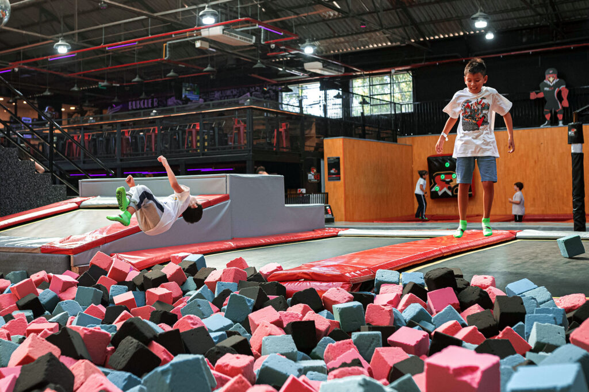GRANJA LA PIEDRA
“Granja la Piedra” es un establecimiento educativo agroturístico familiar que comenzó por el año 1986, y en donde funciona un tambo de cabras y vacas, una muestra de animales de granja, una huerta orgánica y un restaurant en donde se combinan los alimentos que se producen en la Granja y la zona creando exquisitos y originales platos. Está ubicada en Estación Chapadmalal (Batán), a unos 15 km de Mar del Plata. El tambo, eje productivo de la Granja, está basado en un modelo de producción pastoril, en donde se ordeñan cabras y algunas vacas en una superficie de 25 ha. En la quesería se procesa toda la leche obtenida. El predio cuenta básicamente con establos, galpones, una sala de ordeñe, una quesería y un salón de recepción para clientes y estudiantes con una hermosa vista del paisaje. El establecimiento se encuentra completamente diseñado para las demostraciones y visitas educativas, de manera que todos los procesos realizados, como el pastaje de las cabras, la extracción de su leche, la transformación de ésta en productos como quesos, dulces, yogurt, y la reutilización de los productos de desecho, para la obtención de energía (a través de un biodigestor que actualmente se encuentra en construcción) y aprovechamiento de los nutrientes (como fertilizante para los suelos), pueden ser apreciados por los visitantes.
Doble click en la foto para ir a su ubicacion
PASEOS
Sin lugar a dudas, hay paseos y visuales que son una postal obligada para los turistas.
LA RAMBLA
La “foto” de Mar del Plata proyectada por el arquitecto Alejandro Bustillo siguiendo lineamientos de estilo ecléctico monumental. El corazón turístico de la ciudad desde que comenzara la demolición de la rambla existente en 1938 para la edificación de un nuevo megaproyecto arquitectónico: dos edificios en espejo sobre una plataforma que establezca un diálogo entre la costa y la ciudad. El edificio del Casino Central fue primero. Cuatro años después comenzó a nacer su hermano, el Hotel Provincial. Desde 1948, los dos forman el núcleo de un conglomerado urbano declarado Monumento Histórico Nacional por el decreto presidencial 349 de 1999. Alrededor de las construcciones, grandes explanadas, plazoletas y paseos completan la escena. El toque de distinción son dos lobos marinos de cuarzo arenita emplazados en la Plazoleta de la Armada Argentina, creación del escultor José Fioravanti. La coronación de la rambla rinde homenaje a los primeros habitantes de la villa balnearia que hasta mediados del siglo XIX era conocida como “la lobería grande”.La primera obra urbana que conectaba la ciudad con la playa es una referencia de Mar del Plata en el mundo.
Doble click en la foto para ir a su ubicacion
TORRE TANQUE
Ubicada en la esquina de Falucho y Mendoza, en el punto más elevado de la Loma de Stella Maris, la Torre Tanque es lo que es: una torre donde funciona un tanque de agua con 13.500 metros cúbicos de reserva, emblema de la prestación del servicio de agua en Mar del Plata. A nivel vereda la altura es de 40,75 metros sobre el nivel del mar, desde el mirador la altura asciende a 74,75 metros y desde la punta del edificio hay 88,40 metros de distancia al suelo. Una escalera por la que se accede al mirador tiene 194 escalones. La vista es sublime. Fue inaugurada el 30 de enero de 1943 y el concurso de diseño se lo adjudicó el arquitecto Cornelio Lange. Al acto de inauguración asistieron el doctor Ramón Castillo, presidente de la Nación por entonces, el doctor Rodolfo Moreno, gobernador de la Provincia de Buenos Aires, y el doctor Salvador Oría, Ministro de Obras Públicas. La inversión fue de 7.600.000 pesos y asume el estilo arquitectónico Tudor, de inspiración nórdica. “El edificio fue ejecutado con piedra concertada en el subsuelo y planta baja, y el resto en piedra trabajada a punta gruesa y punta fina. La cubierta de la Torre, materializada en pizarras, se resuelve a cuatro aguas, con los pares de faldones opuestos de dimensiones iguales. En las esquinas de remate curvo, la cubierta se articula mediante diez pendientes de las cuales ocho son iguales”, informan en su sitio web.
Doble click en la foto para ir a su ubicacion
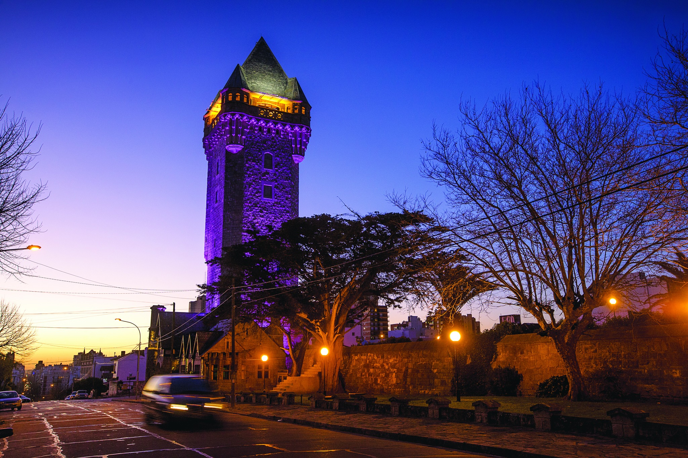TORREON DEL MONJE
Es otro punto imperdible de la ciudad. La construcción ubicada sobre el Paseo Jesús de Galindez, Punta Piedras, a pasos de la playa Las Toscas y de la Avenida Patricio Peralta Ramos es imponente. Tan representativo es de Mar del Plata que no tiene dirección porque no hace falta: carece de un domicilio numérico. Es una de las obras arquitectónicas que sirven para identificar a Mar del Plata. Lo ideó Ernesto Tornquist, un empresario y estanciero, que quería construir un castillo de estilo medieval sobre la playa para que se destacara de los chalets de veraneo de las familias pudientes y porteñas. El imponente edificio se construyó a principios del siglo XX y aún en la actualidad concentra el interés de los turistas. La casa de familias aristocráticas que iban a pasar sus vacaciones: tuvo un esplendor entre los setenta y los noventa cuando fue foco de la farándula, turistas y amantes de la noche que se encontraban para compartir charlas, algún plato o trago hasta amanecer cerca de la arena y el agua. “Pensado como un mirador frente al mar -relata la descripción oficial del lugar-, fue inaugurado en 1904, con los diseños de los prestigiosos arquitectos Eduardo Lanús y Federico Woodgate. En los primeros años, se alojó el Pigeon Club local, donde se practicaba el ‘tiro a la paloma’, uno de los deportes aristocráticos de aquella época. Con el paso de las décadas, el lugar fue cambiando de dueños y en la actualidad alberga un emprendimiento gastronómico y un salón de eventos”.
Doble click en la foto para ir a su ubicacion
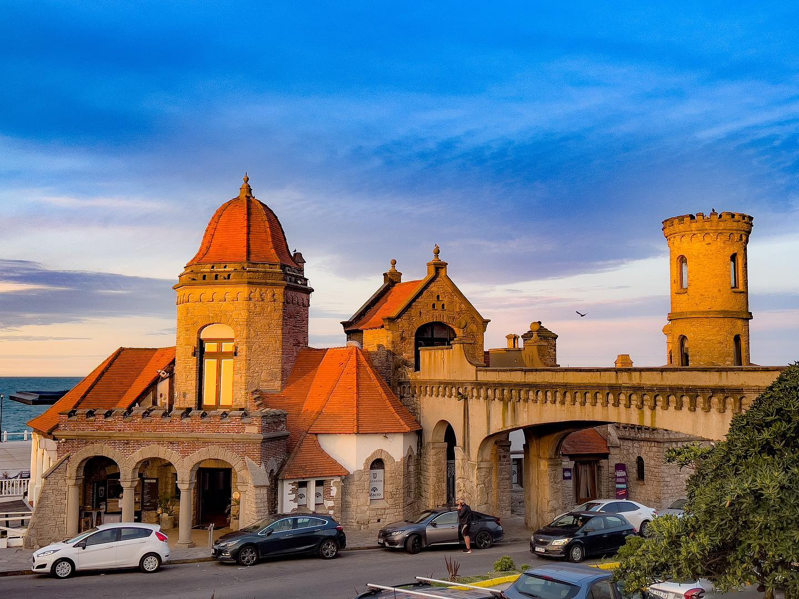PUERTO / ESCOLLERA SUR
lLanchas costeras amarillas de media altura, barcos más grandes, trabajos en vivo de descarga de los frutos de mar, movimientos de pescadores y redes, aleteos de gaviotas y desplazamientos de lobos marinos. El puerto de Mar del Plata ofrece también otra postal icónica de la ciudad. Una estampa de la inmigración italiana que dejaría su impronta y los sabores de su gastronomía. La zona tiene una fuerte identificación con la colectividad italiana: se pueden apreciar principalmente los nombres de las lanchas que rinden homenaje a los Santos de diversas regiones de Italia. La colonia de lobos marinos, el amarre de las embarcaciones en la banquina, una playa, un centro comercial y gastronómico donde comer en restaurantes emblemáticos de la ciudad y donde comprar recuerdos regionales, el Museo del Hombre del Puerto Cleto Ciocchini, la colorida Banquina de Pescadores, el Monumento al Pescador; la Reserva Natural Puerto de Mar del Plata, último reducto de un sistema de lagunas y bañados costeros cuyo objetivo es el de proteger al lobo marino de un pelo; el Barrio Puerto, la Gruta Nuestra Señora de Lourdes, inspirada en la gruta francesa; son otros tantos de los rincones deslumbrantes del puerto que no puede dejar de conocer.
Doble click en la foto para ir a su ubicacion
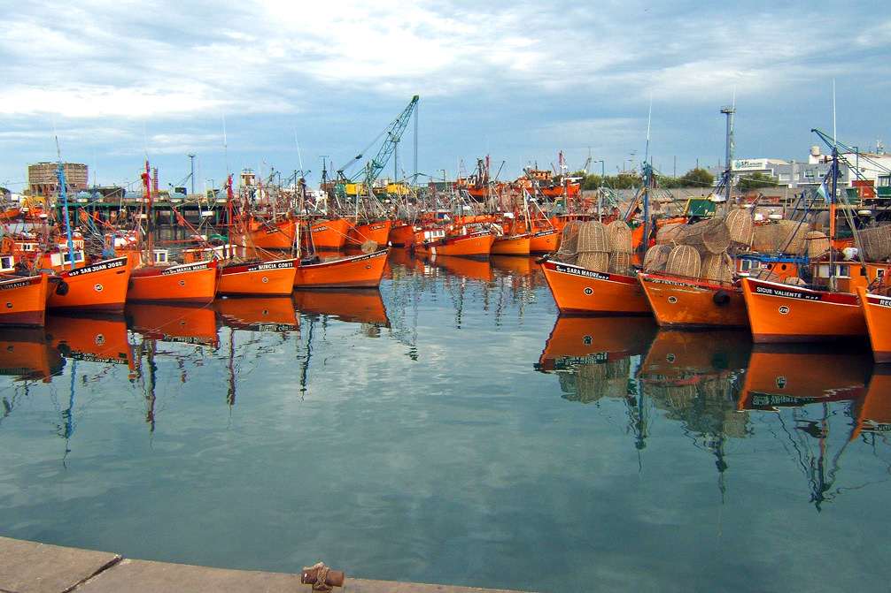RELIGION
Por una cuestión de fe, pero también por la historia, la arquitectura y la aventura de descubrir nuevas creencias y culturas, Mar del Plata ofrece una oportunidad para el “turismo religioso” a través de una variedad de propuestas y un recorrido asociado a diferentes religiones que conviven en la ciudad. La diversidad religiosa de la comunidad marplatense está íntimamente relacionada con la historia de la ciudad. Desde sus orígenes a mediados del siglo XIX, fue elegida por inmigrantes de todo el mundo que trajeron con ellos costumbres y creencias. Han contribuido a la construcción de templos, santuarios y lugares de oración y, aún hoy, sus descendientes continúan tradiciones y celebraciones, en un marco de paz y respeto mutuo
CATEDRAL
La Catedral de los Santos Pedro y Cecilia, ubicada en San Martín y Mitre y declarada Patrimonio Histórico Nacional, se inauguró el 12 de febrero de 1905. Es la tercera más grande de la provincia después de la Catedral de La Plata y la Basílica de Luján. En 1913, con una donación de la señora Cecilia Peralta Ramos de Lesteche, se construyó la amplia sacristía, la casa parroquial y el bautisterio. En 1920 se edificó la Cripta, debajo del Altar Mayor. Es posible ingresar y contemplar sus espacios y arquitectura diariamente.
Doble click en la foto para ir a su ubicacion
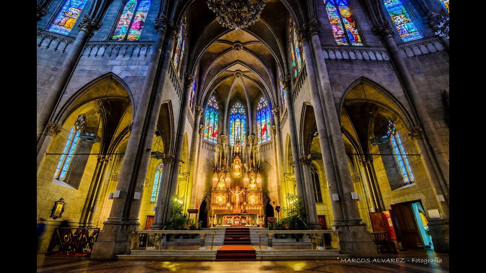SAGRADA FAMILIA
Tanto la Iglesia como el Colegio de la Sagrada Familia fueron construidos en 1928 y el conjunto forma un claustro. La Iglesia es de estilo neobarroco, de inspiración portuguesa, principalmente por el tratamiento de su fachada, como el frontón curvo partido, las columnas salomónicas de la entrada y detalles decorativos utilizando líneas curvas. La obra fue impulsada por la Señora Elisa Alvear de Bosch, a través de la Comisión auxiliar de las Obras Vicentinas de Mar del Plata y fue proyectada por Frigerio y Álvarez Vicente, en tanto que su constructor fue Arturo Lemmi. Resulta una pieza clave de la historia de Mar del Plata, emplazada en el Puerto, en Rondeau 551, en inmediaciones de la Gruta de Lourdes.
Doble click en la foto para ir a su ubicacion
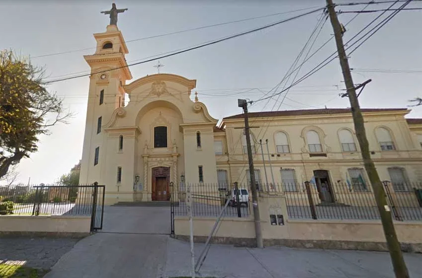GRUTA DE LOURDES
Mar del Plata también tiene su Gruta de Lourdes ocupa la manzana delimitada por 12 de octubre, Don Orione, Magallanes y Alvear, en lo alto de una loma situada en el corazón del Puerto. Su construcción está inspirada en la célebre gruta francesa del mismo nombre. Además de ese amplio espacio al aire libre que encuentra el visitante apenas ingresa, a los costados, en forma de herradura, nacen dos rampas ascendentes que aluden al Vía Crucis, la de la derecha, y a los Misterios del Santo Rosario, la de la izquierda. La construcción de este ícono marplatense responde a la inquietud de un pequeño grupo de religiosas de las Pequeñas Hermanas de la Divina Providencia, que iniciaron su tarea educativa en los sectores más humildes del barrio Puerto.
Doble click en la foto para ir a su ubicacion

MEZQUITA
La primera mezquita sunita de Mar del Plata se edificó desde cero en Bolívar casi Córdoba, en pleno centro de la ciudad. Su aspecto e instalaciones lo constituyen en una auténtica mezquita dedicada a la oración y al estudio del Corán. La obra fue un desafío para profesionales, obreros y artesanos marplatenses. Su fachada está ornamentada con una inconfundible simbología árabe que la distingue del resto de las viviendas y comercios existentes en el lugar. Se trata de la puerta de entrada a un mundo desconocido por muchos en occidente
Doble click en la foto para ir a su ubicacion
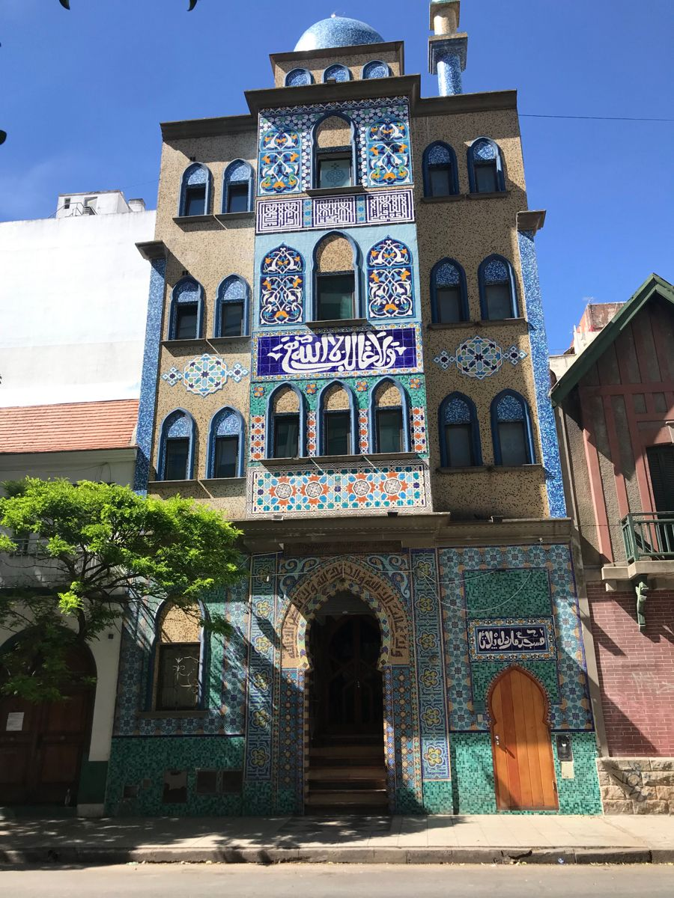